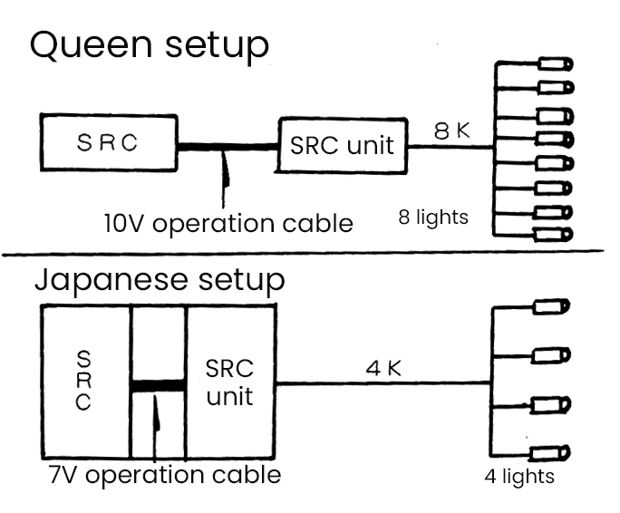
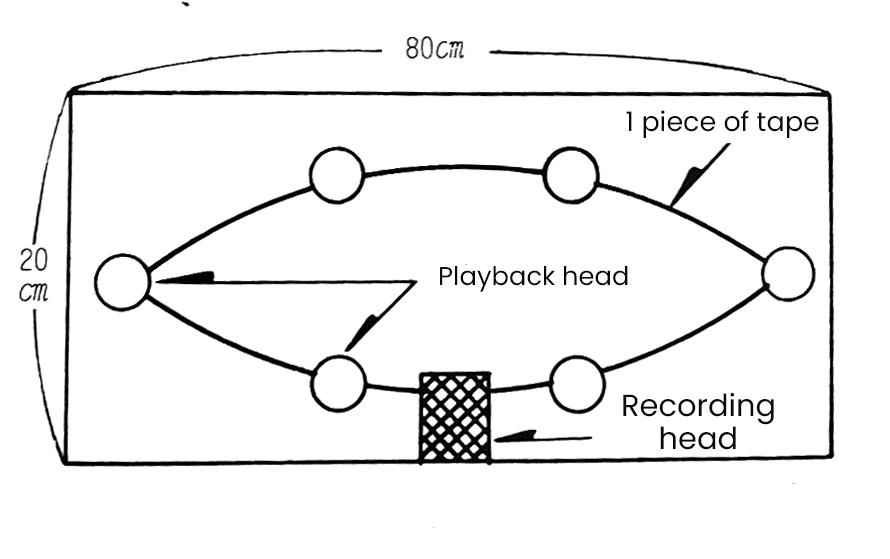

Discover the Secrets of Queen's Sound and Lighting!

Dimmer ........................... American equipment
Unit ........................... Japanese equipment
Spotlight ........................... Japanese equipment
Fog machine ........................... British Equipment
Number of spots used ........................... 120
Electricity used ........................... 180 kW
The biggest problem during this tour was the docking of the Japanese and American equipment. The problem was that Japan uses 100V voltage while 120V is used in the US. Additionally, Japanese dimmers (SCR) have their operating circuits (SCR units, which the Queen crew called "dimmers") all combined into one, while Queen's equipment had separate SCRs and SCR units.
The equipment on Queen's side had 45 circuits, or switches, while the maximum in Japan is 35, which they weren't expecting. On top of that, the maximum number of SCR units currently available in Japan is 41, and they wanted to turn on eight lights with one switch, but in Japan it's only possible to turn on about four with one switch.
Furthermore, the control cables for Queen's equipment were 10V, while the Japanese equipment was only 7V. This meant that there was a concern that if Queen's equipment was used as is, it would only function at around 70% capacity. To address this issue, Queen's SRC was modified to 7V, but this modification took two and a half days and was completed just before opening day (Figure 1).

This section was originally intended just for the lighting, but we can't help but write about Brian's homemade echoplex. This machine is the secret behind Brian's guitar solo and Freddie's vocals in Prophet's Song. The structure is a box about 20 x 80 cm, with one recording head and six playback heads attached behind it (Figure 2).
The way it works is that sound enters through the recording head and travels along the tape to the playback head, where the sound is reproduced. It's no exaggeration to say the secret of the Queen sound is this echoplex!